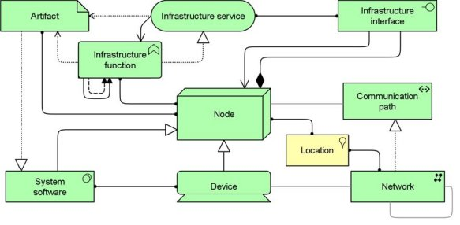

The Infrastructure viewpoint contains the software and hardware infrastructure elements supporting the application layer, such as physical devices, networks, or system software (e.g., operating systems, databases, and middleware).
| Stakeholders | Infrastructure architects, operational managers |
| Concerns | Stability, security, dependencies, costs of the infrastructure |
| Purpose | Designing |
| Abstraction Level | Details |
| Layer | Technology layer |
| Aspects | Behaviour, Active Structure, Passive Structure |
Concepts and Relations
